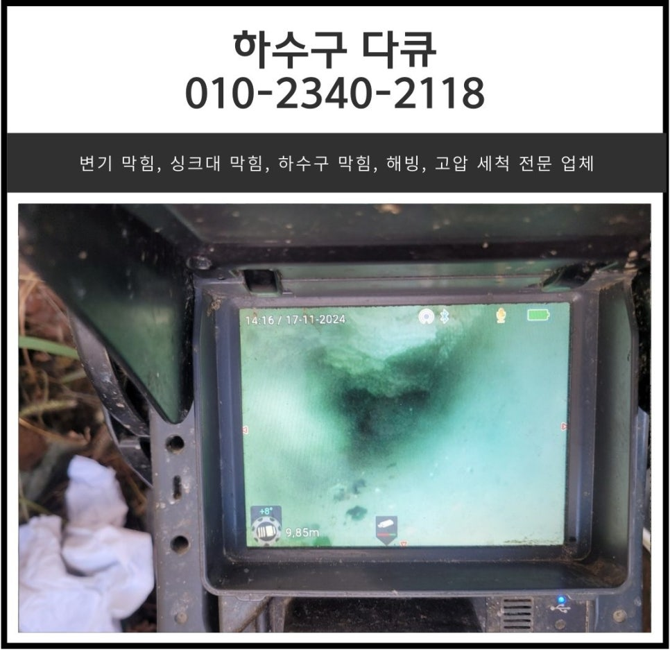
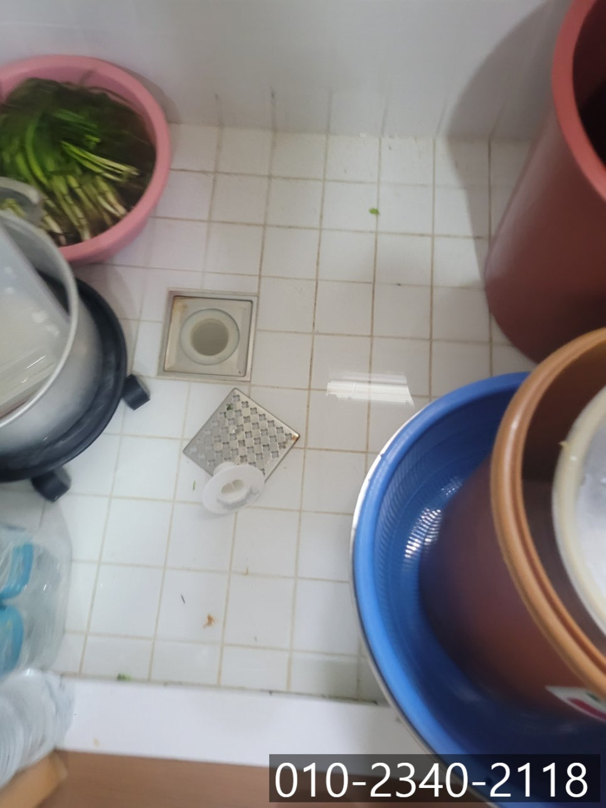
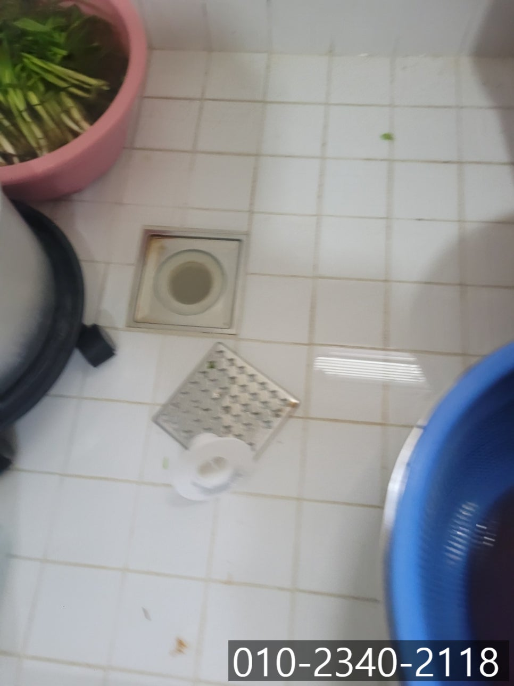
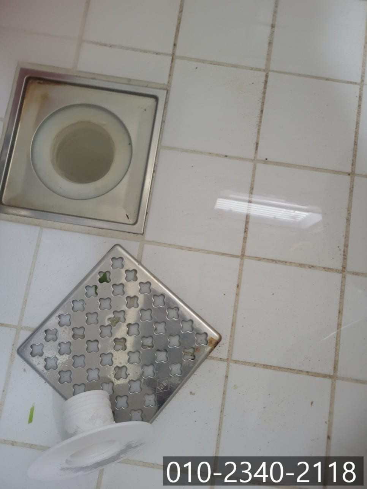
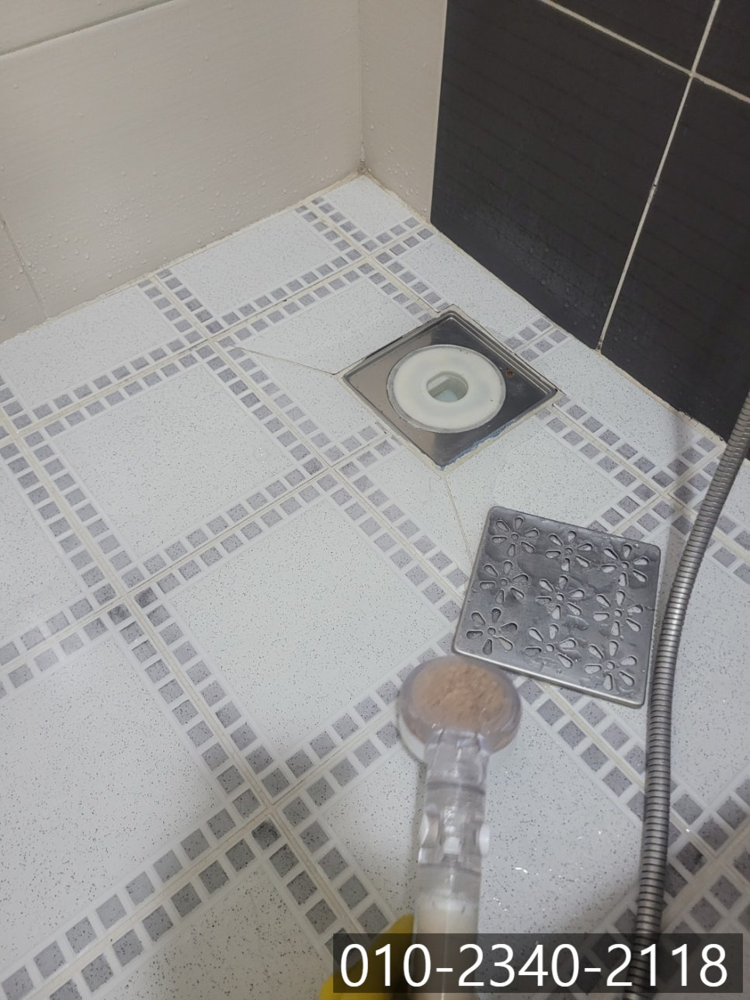
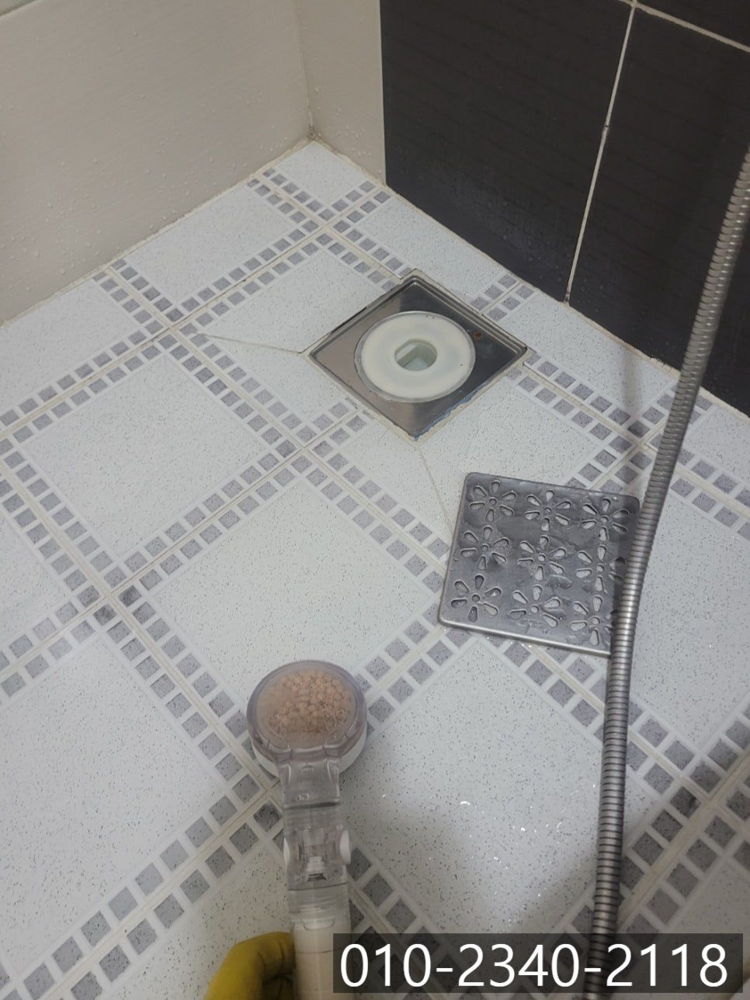
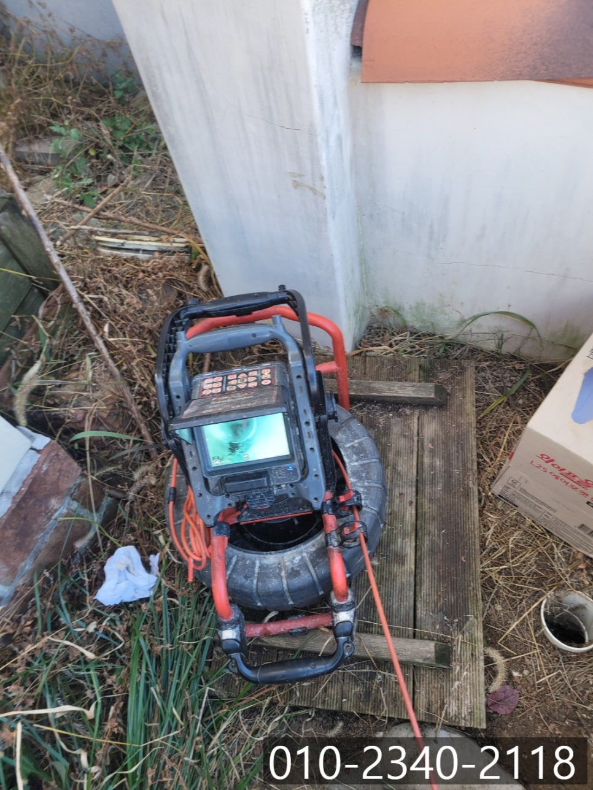

🏠 이천 신둔면 하수구 역류 대월면 화장실 바닥 막힘 뚫는 전문 업체
용인 싱크대막힘 전문 시공 후기

📋 작업 개요
- 위치: 용인
- 서비스 유형: 싱크대막힘, 하수구막힘, 배관막힘, 역류해결, 뚫는업체, 배관청소
- 작업 일시: 2024. 11. 25. 22:17
- 업체명: 하수구수사대 (010-5615-2118)
🔍 문제 상황
안녕하세요.
이천 신둔면 하수구 역류, 대월면 화장실 바닥 막힘 뚫는 전문 업체 하수구 다큐입니다.
수많은 현장들 중 빌라나 단독 주택에 작업을 위해 방문해 보며, 간혹 하나의 배관으로 싱크대, 세탁실, 베란다, 화장실 등을 거쳐 나가도록 만들어진 배관이 의외로 많습니다.
배관을 용도에 맞게 분리하지 않고 하나로 사용하게 되면, 길이가 길어지다 보니, 기름 슬러지나 머리카락, 먼지 등 각종 이물질이 쌓이게 되면서 자주 막히고 역류가 발생할 수밖에 없습니다.
이런 경우 배관이 워낙 길다 보니 작업이 쉽지 않은데요.
오늘은 이천 신둔면 하수구 역류 현장 역시 배관이 연결되어 문제가 발생했던 현장입니다.
현장점검

🔎 원인 분석
💡 전문가 진단: 현장점검
베란다에서 물을 사용하지 않았는데 물이 역류하고 내려가지 않는다고 다급한 고객님의 연락을 받았습니다.
베란다에서 김치를 담그기 위해 준비하고 있던 중이었는데, 가족들이 화장실과 주방 싱크대에서 물을 사용하자 갑자기 베란다로 물이 역류해 아무것도 할 수 없다며 빨리 방문해 해결해달라는 연락이었어요.
고객님께서 심각한 현장의 모습을 촬영해 보내주셨는데요.
심각한 상황이다 보니 같은 동네에 거주하시는 설비 업체에 연락해 뚫어보려고 했지만, 용수철처럼 생긴 장비로 몇 번 뚫기 위해 시도해 보시다가 못하겠다고 포기하고 돌아가셨다고 해요.
대월면 화장실 바닥 막힘 뚫는 전문 업체 하수구 다큐는 고객님께 정확한 주소를 받아 신속하게 현장에 방문해 드렸습니다.
작업과정
대월면 화장실 바닥 막힘 뚫는 전문 업체 하수구 다큐는 고객님의 연락을 받은 지 40분 만에 현장에 도착해 베란다와 화장실부터 점검을 시작했어요.

🔧 작업 과정
화장실은 육안으로 확인했을 땐 별다른 문제가 없어 보였지만, 베란다는 물이 역류한 채 흘러가지 못하는 상태로 빠른 작업이 필요해 보였습니다.
우선 베란다에 역류한 물과 이물질들은 석션으로 빨아드려 제거하는 작업을 진행해 드린 다음 배관의 구조와 이천 신둔면 하수구 역류의 원인을 파악해 보기로 했어요.
베란다에서 물을 사용하지 않고, 다른 곳에서 물을 사용했는데 역류하는 현상이 나타나는 게 직접 경험하지 않으면 이해가 어려우실 것 같은데요.
건물의 배관이 하나로 연결되어 있는 상태에서 한 군데가 막히게 되면 나타나기도 합니다.
이천 신둔면 하수구 역류 현장 역시 각각의 배관에서 사용한 물이 모이는 메인 배관에서 이물질로 인해 막힘이 발생하다 보니 베란다에서 물을 사용하지 않아도 역류가 발생한 것 같다고 예측할 수 있었어요.
정확한 건 건물 밖에 위치한 배관으로 내시경 카메라를 진입시켜 내부를 점검해 보기로 했습니다.
예상했던 대로 오랜 시간 흘려보낸 물과 이물질, 먼지, 머리카락 등이 뒤엉켜 배관을 막고 있다 보니, 주방과 화장실에서 한 번에 많은 양의 물을 사용하자 이를 소화해 내지 못하고 베란다로 역류하게 된 것 같아요.
대월면 화장실 바닥 막힘 뚫는 전문 업체 하수구 다큐는 내시경 카메라를 이용해 파악한 원인을 고객님께 설명해 드리고, 배관 스케일링을 추천해 드렸어요.
설명을 들으신 고객님께서 다른 설비업체에서도 실패한 작업인데 해결할 수 있냐며 걱정의 말씀을 해주셨지만 하수구 다큐를 믿고 작업을 맡겨주셨습니다.
외부에 위치한 하수구에 플렉스 샤프트를 진입시켜 배관 내벽에 쌓인 이물질을 모두 제거하기로 했는데요.
항상 구비하고 다니는 파이프를 배관에 연결시켜 장비를 진입시킨 다음 작업을 진행할 수 있었어요.
플렉스 샤프트 장비가 배관 내부에 쌓인 이물질을 타격해 잘게 부서서 제거하자 통수가 되면서 고여있던 물이 흘러나오게 됩니다.


✅ 작업 완료
이렇게 물길이 뚫리는 순간 정말 짜릿함을 느낄 수밖에 없어요.
신나서 작업을 진행하느라 깨끗해진 배관 내부를 사진으로 남겨두지 못해 너무 아쉽지만, 남아있던 이물질을 모두 제거하고 내시경 카메라를 이용해 깨끗이 청소된 배관 내부를 고객님께 보여드리고, 집안에서 많은 양의 물을 사용해도 막힘이나 역류 없이 흘러 나가는 것까지 꼼꼼하게 테스트한 뒤 작업을 마무리할 수 있었습니다.
경기도 용인시 수지구 풍덕천로129번길 9 5층 590호




⚠️ 주방 싱크대 배관 막힘 예방 수칙
- ✅ 기름기가 묻은 식기나 프라이팬은 설거지 전 키친타올로 반드시 기름때를 닦아내세요.
- ✅ 주기적으로 싱크대 개수대에 뜨거운 물을 가득 받아 한 번에 내려 배관 내부 기름을 씻어내세요.
- ✅ 배수구 거름망을 미세한 필터로 사용하시고 음식물 찌꺼기가 틈으로 새어 들지 않게 관리하세요.
- ✅ 베이킹소다와 식초를 뜨거운 물과 함께 일주일에 한 번씩 부어주면 배관 살균과 막힘 예방에 좋습니다.
💡 핵심 정리
- 확실한 장비 작업(내시경 점검 및 샤프트 스케일링)으로 원인을 뿌리 뽑습니다.
- 작업 후 1년 이내에 동일한 부위 재발 시 100% 무상 A/S 서비스를 보장합니다.
- 서울 · 경기 · 인천 전 지역에 24시간 언제든 긴급 출동할 수 있도록 항시 대기 중입니다.
❓ 자주 묻는 질문 (FAQ)
🚨 용인 싱크대막힘 문제로 고민이신가요?
정확한 원인 진단과 확실한 시공으로 재발 없는 해결을 약속드립니다.
24시간 긴급 출동 | 서울 · 경기 · 인천 전지역 | 1년 내 재발 시 무상 A/S